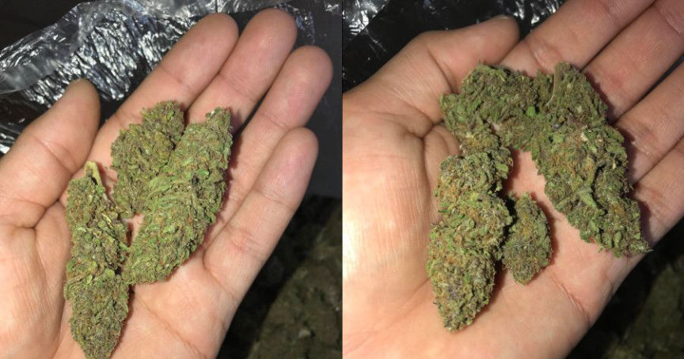
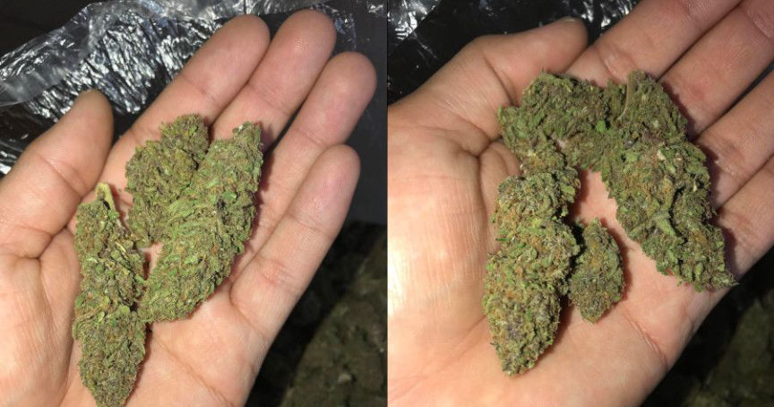

A Reminder Not to Take Pictures of Your Fingers
~2 min read | Published on 2022-05-10, tagged General-News using 495 words.
A drug dealer in the UK shared a picture of a block of cheese in one of his hands. Police analyzed the partial fingerprints in the image and identified the dealer.

One might think that people know better than to take pictures of their fingers when trying to remain anonymous. A case from 2021 would prove you wrong.
When law enforcement agencies hacked Encrochat, they obtained messages sent by a drug dealer with the username “Toffeeforce.” One of the user’s messages included a picture of his hand holding a block of cheese.
According to the Merseyside Police, investigators pulled palm and fingerprints from the picture. The prints matched those of Liverpool resident Carl Stewart.
Det Insp Lee Wilkinson of Merseyside Police said, “Stewart was involved in supplying large amounts of class A and B drugs, but was caught out by his love of Stilton cheese, after sharing a picture of a block of it in his hand through encrochat. His palm and fingerprints were analyzed from this picture, and it was established they belonged to Stewart.”
If investigators “established” the prints belonged to Stewart through analysis of the picture, which seems to be what the LEO is saying, law enforcement had Stewart’s fingerprints on file for a different reason (such as a previous arrest).
The investigation into the marijuana vendor “Canna_Bars” provides an example of a similar scenario. Canna_Bars had uploaded pictures of their products to Imgur.com. The vendor held marijuana buds in their bare hand for the close-up images. The Imgur gallery contained shots from slightly different perspectives, giving investigators several high-definition pictures of the vendor’s fingerprints.

From a Darknetlive article about the case:
“The investigator working the case sent high-quality copies of the pictures to the Homeland Security Investigations Document Laboratory (FDL). On March 20, 2018, the analysts at FDL sent the investigator a report that included their findings: the fingerprints in the pictures matched the fingerprints on file for [Jose] Porras.”
Police already had fingerprint cards on file for Porras due to a previous arrest for a possession with intent charge.
One big difference is the quality of the pictures available in the Canna_bars case compared to the quality of the one picture of cheese available to the public in Stewart’ case. I suspect that the only copies of the picture of Stewart’s fingers have been compressed by the websites hosting the pictures, rendering it nearly impossible to see any ridgelines. The full resolution copy of Stewart’s picture is available at this
This case is also less of an OPSEC failure than Porras’ mistakes; police had already hacked Stewart’s phone and would have likely identified him at some point, regardless of the prints.
Stewart pleaded guilty to conspiracy to supply cocaine, heroin, MDMA, and ketamine and one count of transferring criminal property. In May 2021, Stewart was sentenced to 13 years and six months in prison at Liverpool Crown Court.
Carl Stewart
One might think that people know better than to take pictures of their fingers when trying to remain anonymous. A case from 2021 would prove you wrong.
When law enforcement agencies hacked Encrochat, they obtained messages sent by a drug dealer with the username “Toffeeforce.” One of the user’s messages included a picture of his hand holding a block of cheese.
According to the Merseyside Police, investigators pulled palm and fingerprints from the picture. The prints matched those of Liverpool resident Carl Stewart.
Det Insp Lee Wilkinson of Merseyside Police said, “Stewart was involved in supplying large amounts of class A and B drugs, but was caught out by his love of Stilton cheese, after sharing a picture of a block of it in his hand through encrochat. His palm and fingerprints were analyzed from this picture, and it was established they belonged to Stewart.”
A picture of the cheese picture containing Stewart's fingerprints
If investigators “established” the prints belonged to Stewart through analysis of the picture, which seems to be what the LEO is saying, law enforcement had Stewart’s fingerprints on file for a different reason (such as a previous arrest).
The investigation into the marijuana vendor “Canna_Bars” provides an example of a similar scenario. Canna_Bars had uploaded pictures of their products to Imgur.com. The vendor held marijuana buds in their bare hand for the close-up images. The Imgur gallery contained shots from slightly different perspectives, giving investigators several high-definition pictures of the vendor’s fingerprints.

Pictures uploaded by Porras aka Canna_bars
From a Darknetlive article about the case:
“The investigator working the case sent high-quality copies of the pictures to the Homeland Security Investigations Document Laboratory (FDL). On March 20, 2018, the analysts at FDL sent the investigator a report that included their findings: the fingerprints in the pictures matched the fingerprints on file for [Jose] Porras.”
Police already had fingerprint cards on file for Porras due to a previous arrest for a possession with intent charge.
One big difference is the quality of the pictures available in the Canna_bars case compared to the quality of the one picture of cheese available to the public in Stewart’ case. I suspect that the only copies of the picture of Stewart’s fingers have been compressed by the websites hosting the pictures, rendering it nearly impossible to see any ridgelines. The full resolution copy of Stewart’s picture is available at this
link
.Left: Picture of Stewart's fingers, Right: picture of Porras' fingers
This case is also less of an OPSEC failure than Porras’ mistakes; police had already hacked Stewart’s phone and would have likely identified him at some point, regardless of the prints.
Stewart pleaded guilty to conspiracy to supply cocaine, heroin, MDMA, and ketamine and one count of transferring criminal property. In May 2021, Stewart was sentenced to 13 years and six months in prison at Liverpool Crown Court.